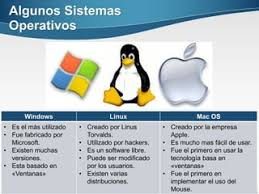

Es un conjunto de programas que permiten manejar tanto los recursos físicos (hardware) como los programas (software) en una computadora. El sistema operativo es el programa principal que debe tener una computadora y sirve de base para que se puedan ejecutar los programas llamados de aplicación..
El hecho de organizar los contenidos en diferentes ventanas permite que el usuario pueda visualizarlas en simultáneo, ya sea en formato de mosaico, minimizadas o superpuestas. Es decir, la interfaz de las ventanas permite ver y ejecutar varias acciones a la vez, como un procesador de datos (archivo de Word), un reproductor de video o un editor de gráficos, entre muchos otras. .
| En 1975 Bill Gates y Paul Allen fundaron la compañía Microsoft en Estados Unidos, con el objetivo de desarrollar y comercializar programas para ejecutar el Altair 8800, un microordenador diseñado en 1974. Gates y Allen desarrollaron el primer lenguaje de programación para el Altair Basic. |  En 1990 Microsoft lanzó Windows 3.0, una nueva versión del sistema operativo. A medida que desarrolló versiones mejoradas, modificó el correspondiente número del nombre. Sin embargo, en 1995 lanzó el Windows 95 que ofrecía una interfaz completamente nueva con un explorador de archivos mejorado, un menú de inicio de acceso rápido y una mejor compatibilidad de hardware, entre otras ventajas.
| |